Scatterplots, hexagonal heatmaps, and pairs plots from MCMC draws. See the Plot Descriptions section, below, for details.
mcmc_scatter(x, pars = character(), regex_pars = character(), transformations = list(), ..., size = 2.5, alpha = 0.8) mcmc_hex(x, pars = character(), regex_pars = character(), transformations = list(), ..., binwidth = NULL) mcmc_pairs(x, pars = character(), regex_pars = character(), transformations = list(), ..., diag_fun = c("hist", "dens"), off_diag_fun = c("scatter", "hex"), diag_args = list(), off_diag_args = list(), condition = pairs_condition(), lp = NULL, np = NULL, np_style = pairs_style_np(), max_treedepth = NULL) pairs_style_np(div_color = "red", div_shape = 4, div_size = 1, td_color = "yellow2", td_shape = 3, td_size = 1) pairs_condition(chains = NULL, draws = NULL, nuts = NULL)
| x | A 3-D array, matrix, list of matrices, or data frame of MCMC draws. The MCMC-overview page provides details on how to specify each these allowed inputs. |
|---|---|
| pars | An optional character vector of parameter names. For
|
| regex_pars | An optional regular expression to use for
parameter selection. Can be specified instead of |
| transformations | Optionally, transformations to apply to parameters
before plotting. If |
| ... | Currently ignored. |
| size, alpha | For |
| binwidth | For |
| diag_fun, off_diag_fun | For |
| diag_args, off_diag_args | For |
| condition | For |
| lp | For |
| np | For |
| np_style | For |
| max_treedepth | For |
| div_color, div_shape, div_size, td_color, td_shape, td_size | Optional
rguments to the |
| chains, draws, nuts | Optional arguments to the
|
mcmc_scatter and mcmc_hex return a ggplot object that
can be further customized using the ggplot2 package.
mcmc_pairs returns many ggplot objects organized into a grid via
bayesplot_grid.
mcmc_scatterBivariate scatterplot of posterior draws. If using a very large number of
posterior draws then mcmc_hex may be preferable to avoid
overplotting.
mcmc_hexHexagonal heatmap of 2-D bin counts. This plot is useful in cases where
the posterior sample size is large enough that mcmc_scatter suffers
from overplotting.
mcmc_pairsA square plot matrix with univariate marginal distributions along the
diagonal (as histograms or kernel density plots) and bivariate
distributions off the diagonal (as scatterplots or hex heatmaps).
For the off-diagonal plots, the default is to split the chains so that
(roughly) half are displayed above the diagonal and half are below (all
chains are always merged together for the plots along the diagonal). Other
possibilities are available by setting the condition argument.
Additionally, extra diagonistic information for models fit using
NUTS can be added to the pairs plot using the lp,
np, and np_style arguments.
Other MCMC: MCMC-combos,
MCMC-diagnostics,
MCMC-distributions,
MCMC-intervals, MCMC-nuts,
MCMC-overview, MCMC-recover,
MCMC-traces
#> $Iteration #> NULL #> #> $Chain #> [1] "chain:1" "chain:2" "chain:3" "chain:4" #> #> $Parameter #> [1] "alpha" "sigma" "beta[1]" "beta[2]" "beta[3]" "beta[4]" #># scatterplot of alpha vs log(sigma) color_scheme_set("teal") (p <- mcmc_scatter(x, pars = c("alpha", "sigma"), transform = list(sigma = "log")))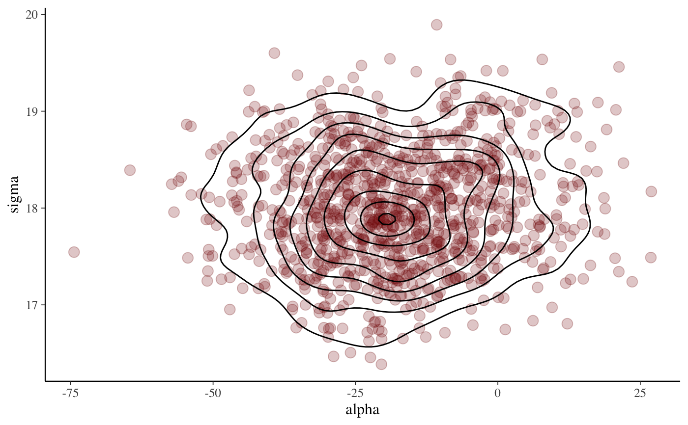p + ggplot2::labs( title = "Insert your own headline-grabbing title", subtitle = "with a provocative subtitle", caption = "and a controversial caption", x = expression(alpha), y = expression(log(sigma)) )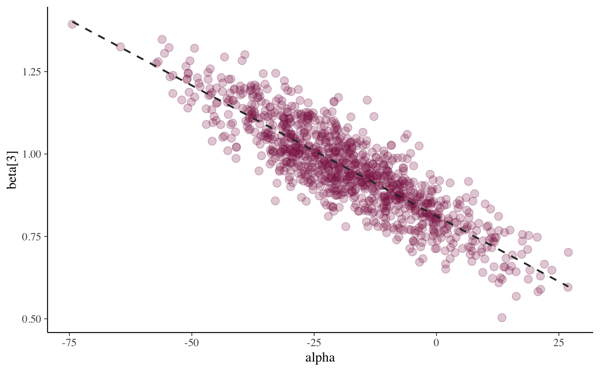# add ellipse p + ggplot2::stat_ellipse(level = 0.9, color = "gray20", size = 1)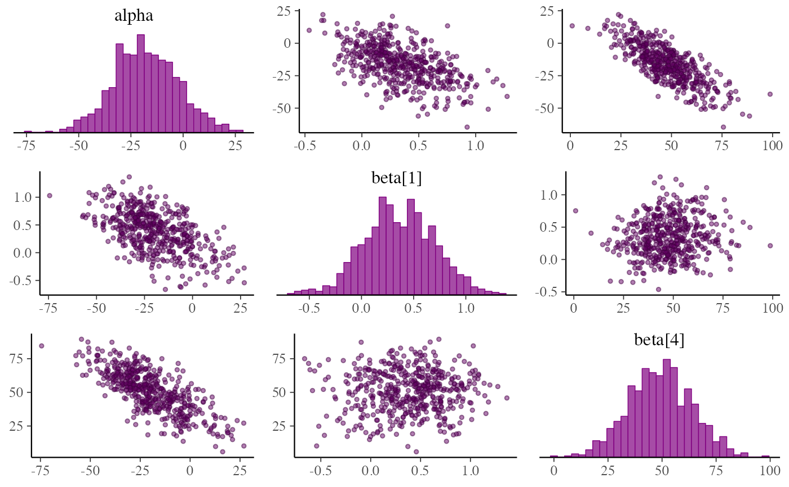# add contour color_scheme_set("red") p2 <- mcmc_scatter(x, pars = c("alpha", "sigma"), size = 3.5, alpha = 0.25) p2 + ggplot2::stat_density_2d(color = "black")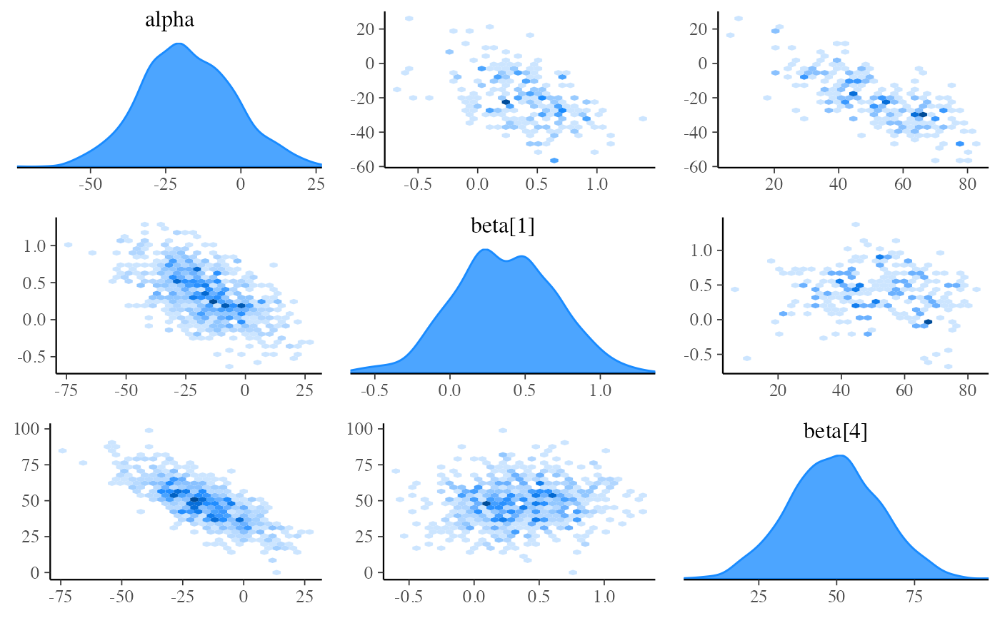# can also add lines/smooths color_scheme_set("pink") (p3 <- mcmc_scatter(x, pars = c("alpha", "beta[3]"), alpha = 0.25, size = 3))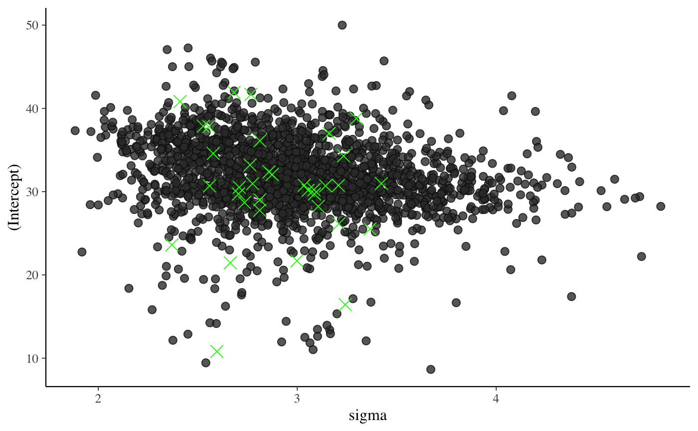p3 + ggplot2::geom_smooth(method = "lm", se = FALSE, color = "gray20", size = .75, linetype = 2)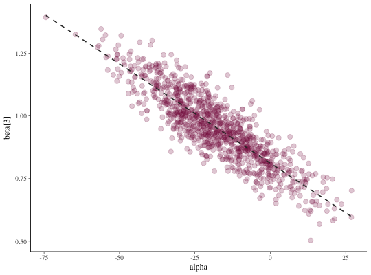# hexagonal heatmap color_scheme_set("brightblue") (p <- mcmc_hex(x, pars = c("sigma", "alpha"), transform = list(sigma = "log")))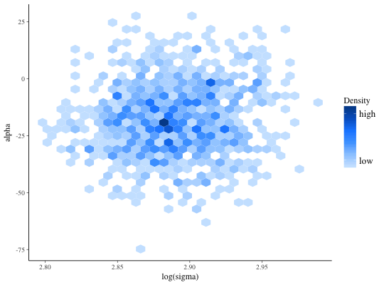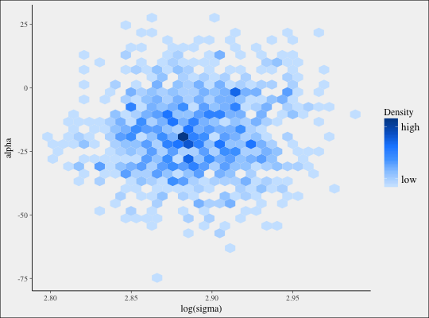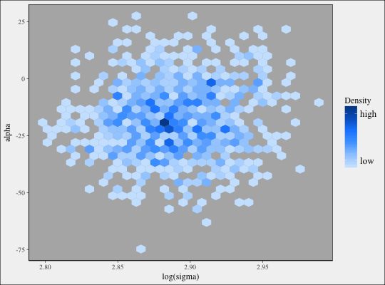color_scheme_set("purple") # pairs plots # default of condition=NULL implies splitting chains between upper and lower panels mcmc_pairs(x, pars = "alpha", regex_pars = "beta\\[[1,4]\\]", off_diag_args = list(size = 1, alpha = 0.5))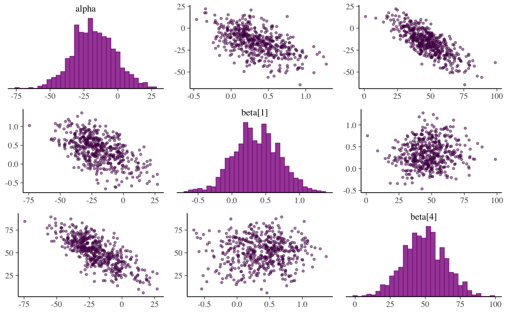# change to density plots instead of histograms and hex plots instead of # scatterplots mcmc_pairs(x, pars = "alpha", regex_pars = "beta\\[[1,4]\\]", diag_fun = "dens", off_diag_fun = "hex")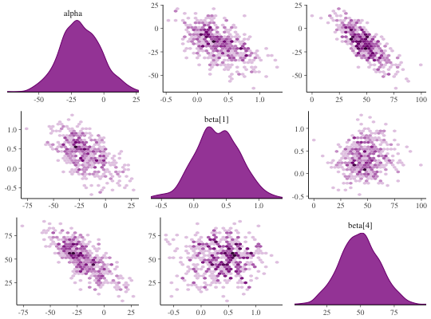# plot chain 1 above diagonal and chains 2, 3, and 4 below color_scheme_set("brightblue") mcmc_pairs(x, pars = "alpha", regex_pars = "beta\\[[1,4]\\]", diag_fun = "dens", off_diag_fun = "hex", condition = pairs_condition(chains = list(1, 2:4)))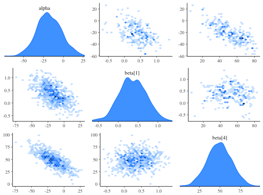not_run({ # pairs plot with NUTS diagnostic info overlaid, # example using rstanarm package library(rstanarm) # for demonstration purposes, intentionally fit a model that # will (almost certainly) have some divergences fit <- stan_glm( mpg ~ ., data = mtcars, iter = 1000, # this combo of prior and adapt_delta should lead to some divergences prior = hs(), adapt_delta = 0.9 ) posterior <- as.array(fit) np <- nuts_params(fit) # split the draws according to above/below median accept_stat__ and # show approximate location of divergences (red points) mcmc_pairs( posterior, pars = c("wt", "cyl", "sigma"), off_diag_args = list(size = 1, alpha = 1/3), condition = pairs_condition(nuts = "accept_stat__"), np = np ) # more customizations: # - transform sigma to log(sigma) # - median log-posterior as 'condition' # - hex instead of scatter for off-diagonal plots # - show points where max treedepth hit in blue color_scheme_set("darkgray") mcmc_pairs( posterior, pars = c("wt", "cyl", "sigma"), transform = list(sigma = "log"), off_diag_fun = "hex", condition = pairs_condition(nuts = "lp__"), lp = log_posterior(fit), np = np, np_style = pairs_style_np(div_color = "firebrick", td_color = "blue", td_size = 2.5), # for demonstration purposes, set max_treedepth to a value that will # result in at least a few max treedepth warnings max_treedepth = with(np, -1 + max(Value[Parameter == "treedepth__"])) ) })